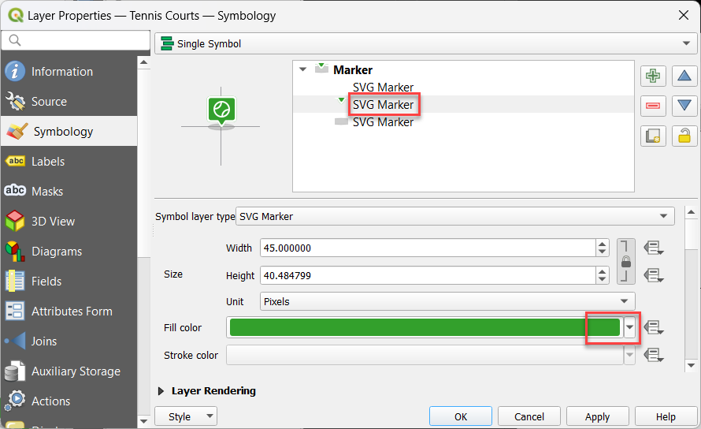

#
Styling Layers
Using QGIS, you can control many visual aspects of your layer. You may apply a common style for all the features in a layer (Single Symbol) or apply a thematic style that displays features according to any of its attributes (Categorized).
#
WMS Layers
When Pozi fetches a layer using WMS (ie, not vector), QGIS Server renders the layer exactly as configured in QGIS.
#
Vector Layers
When using vector layers (ie, WFS-enabled), the rendering is done by Pozi in the browser, which can cause the layer to appear differently compared to QGIS for some styling options.
When styling vector layers, use only the supported styles specified below.
(If you need Pozi to display layers using a QGIS style that doesn't appear in the below lists of supported styles, disable WFS for the layer to force Pozi to retrieve the layer via WMS, which uses the QGIS Server renderer.)
#
Points
Supported marker symbols:
- Simple Marker
squarecircletrianglestarcrossx
- SVG Marker
- QGIS default SVG icons
- FontAwesome Pro 6 icons
Note that diamond, cross2, cross_fill, star_diamond symbols are not currently supported. Symbol rotation is also not supported.
Suggested sizes:
- set size to
4mmor greater enable to easier interaction for users in the browser - set stroke to white,
0.5mmor greater to provide separation from the background
#
Lines
Supported lines:
- Simple Line
- Solid Line
- No Pen
- Custom Dash Pattern
Set line thicknesses to 2mm or greater to enable users to easily select line features.
To style a line with dots and/or dashes:
- set the cap style to
flat - tick "Use custom dash pattern"
- specify a dash pattern (eg,
4 2) in millimeters.

#
Polygons
Supported fills:
- Simple Fill
- Solid
- No brush (see note below)
- Cross
- Diagonal X
- Point Pattern Fill

Note
If the polygon fill style is set to 'No brush', it will prevent users from being able to select a polygon when clicking within the polygon.
To display a polygon with an empty fill while still enabling users to select the polygon, use the 'Solid' fill, and set the opacity of the fill color to a low or zero value.
#
Labels
Point, line and polygon features can optionally be configured to display labels.
Not yet supported in Pozi:
- label offsets
- buffer transparency
- text expressions
- combining values from multiple fields
- find-and-replace operations
- converting to upper or lower case
- etc
Instead of using text expressions to manipulate text, use virtual fields to achieve the same effect.
To improve legibility, set label text size to 10 points or greater and a white 1.8mm buffer.
#
Embedded Symbology
MapInfo tables sometimes contain embedded styles. QGIS Desktop may recognise and display the map features using these styles, but QGIS Server is unable to pass on the styling information to Pozi for styling vector layers.
If the layer appears in QGIS Symbology mode "Embedded Symbols", switch it to "Single Symbol" or "Categorized", and style it according to your preference.
#
Categorized Symbology
Layers can be styled using the Categorized option. Pick the field to use for the category from the drop-down list, then click the Classify button.

#
Limitations
When publishing the layer as a vector layer, the field used for categorisation must be a field that that is exposed (ie, not hidden).
An addition, the following limitations apply:
- the symbology must be based on a field (real or virtual), not an expression
- the values must not be merged (ie, only one value per row)
- the field name must not contain any spaces
You can work around these limitations by creating a suitably named virtual field that contains the required logic.
For instance, the virtual field can contain a case statement to accept any number of input values (from one or more fields) and generate specific values for use in subsequent styling.

See Virtual Fields for more information.
#
Fallback Style
When using the Classify button to generate styles for each unique value, QGIS automatically generates an additional fallback style for "all other values". However this function is not supported in Pozi - this style category will be ignored by Pozi.
#
Opacity
Layer Styling > Layer Rendering > Opacity
Layers are initially displayed in Pozi using the opacity value you've set - the user may then adjust the opacity up or down from the initial value.
#
Bubble Symbols
Pozi Enterprise Cloud customers can display their vector point layers using Pozi's popular bubble symbols.

Ensure the PC on which the QGIS project is being maintained has the Font Awesome icon library installed and configured in QGIS.
#
Customise Bubble Symbol
- download sample SLD file
- go to Layer Properties > Symbology > Style > Load Style > ... (select downloaded SLD file) > Load Style
- pick icon
- select top SVG Marker item
- set the Fill Color to white (#FFFFFF)
- in SVG browser, select Pozi SVGs
- browse icons or use search box to find icon
- select icon
- pick bubble colour
- select middle SVG Marker item
- click Fill Color to change colour
- 
- OK
Save your project, and preview the layer in Pozi.
Note that the vertical alignment of the icon within the bubble in QGIS may differ slightly to what you see in the Pozi app. What's important is that the icon displays appropriately in Pozi, even if it looks slightly misaligned in QGIS.
The Font Awesome icon library contains thousands of icons to choose from. While you can use the search function within the QGIS SVG browser to search based on an icon filename, you can also use the online Font Awesome search tool to discover icons that match your need, even if your search term doesn't appear in the icon file name.
Looking for a barbecue icon? Type 'bbq' into the Font Awesome online search to see the matching icons. Note that they are named 'grill'. Now go to the QGIS SVG browser and type in 'grill' to find the icon.
#
Troubleshooting
Ensure that the field used for categorisation is exposed (ie, not hidden). See
Pozi will display layers in a generic style (often purple) if it cannot process the style that was configured in QGIS.
Simplify the style in the QGIS project and try again. For point features, replace custom point symbols with one of the
It's possible that the GetFeatureInfo response coordinates do not have enough precision.
Open the affected QGIS project(s), go to Project > Properties > QGIS Server > WMS Capabilities > GetFeatureInfo geometry precision, and set it to 8 decimal places.
There are some limitations for labels on vector features in Pozi:
- labels are always placed in the centre of the feature, regardless of any placement rules
- complex text expressions may not generate the expected text
The issue with text expressions can be easily overcome by using a virtual field for the label.
Otherwise, for complete control of how the layer appears in Pozi, consider switching the layer to WMS by disabling WFS for the layer.